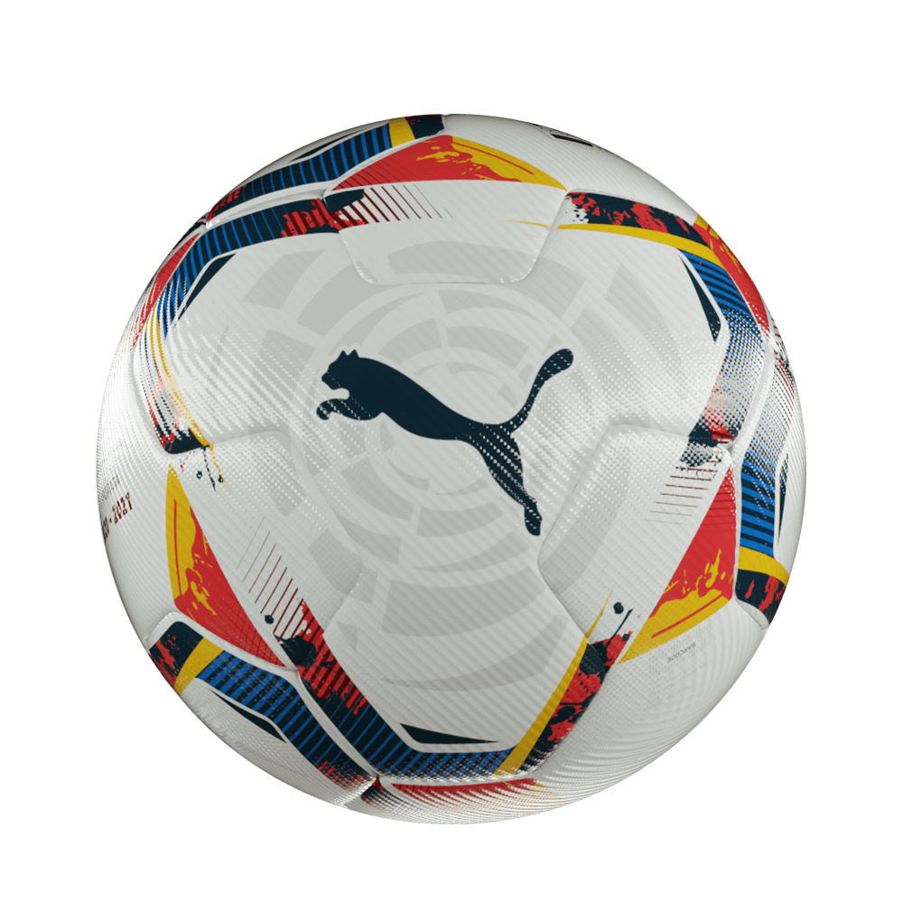

El Futbol es un deporte de equipo jugado entre dos conjuntos de once jugadores
cada uno.
Click Aquí
Para Ver Mas
El voleibol consta de dos equipos compuestos de seis jugadores cada uno
Click Aquí
Para Ver Mas
El tenis de mesa o ping pong es un juego de mesa que se disputa entre dos
jugadores o dos parejas.
Cick Aquí para Ver
Mas